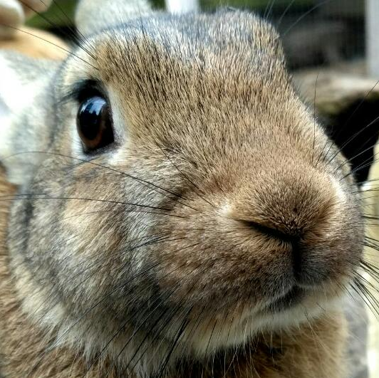

Hallo! Ik ben Tabitha en ik woon in Nederland (Apeldoorn). In 2007 werd ik geboren, momenteel ben ik 17 jaar oud. Thuis hebben we veel huisdieren, en in mijn vrije tijd ben ik graag creatief bezig.
Ik ben altijd al graag creatief bezig, en hoewel het lang duurde voordat ik precies wist wat ik wilde worden, heb ik daar altijd al wat mee willen doen. Ook ben ik een periode veel met robots en programmeren bezig geweest. Dit heeft er onder andere voor gezorgd dat ik mijn toekomstige baan nu in de WebDevelopment zoek.
Al een poosje ben ik mij aan het verdiepen in verschillende soorten programmeer talen; Zo heb ik (bijna) alle cursussen van Code Avengers (12+) afgerond, en ben ik nu bezig met een cursus Web Development, waarin ik deze website heb gemaakt (zie school).
Wil je meer over mij, en wat ik tot nu toe heb gedaan te weten komen?
Hieronder in het menu vind je de rest.
succes!